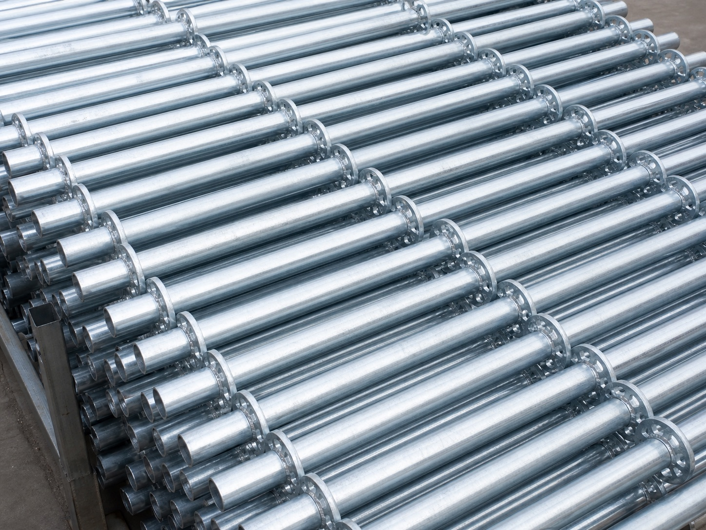

SCAFFOLDING COMPONENT
Vertical Standard
The main upright member in a modular scaffolding system. It transfers working loads vertically and provides connection points at regular levels for ledgers, braces and other components, helping create stable multi-level scaffold structures.
Request details ↗